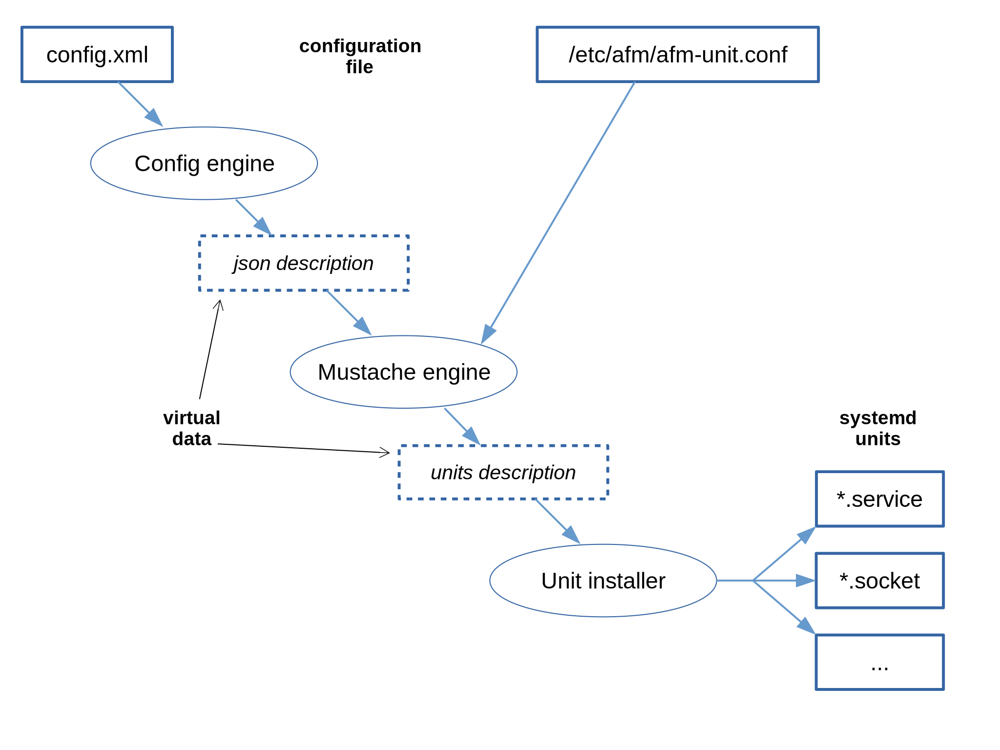

Configuration file - config.xml
The widgets are described by the W3C’s technical recommendations Packaged Web Apps (Widgets) and XML Digital Signatures for Widgets that specifies the configuration file config.xml.
Overview
The file config.xml describes important data of the application to the framework:
- the unique identifier of the application
- the name of the application
- the type of the application
- the icon of the application
- the permissions linked to the application
- the services and dependencies of the application
The file MUST be at the root of the widget and MUST be case sensitively name config.xml.
The file config.xml is a XML file described by the document widgets.
Here is the example of the config file for the QML application SmartHome.
<?xml version="1.0" encoding="UTF-8"?>
<widget xmlns="http://www.w3.org/ns/widgets" id="smarthome" version="0.1">
<name>SmartHome</name>
<icon src="smarthome.png"/>
<content src="qml/smarthome/smarthome.qml" type="text/vnd.qt.qml"/>
<description>This is the Smarthome QML demo application. It shows some user interfaces for controlling an
automated house. The user interface is completely done with QML.</description>
<author>Qt team</author>
<license>GPL</license>
</widget>
The most important items are:
-
<widget id=”……”>: gives the id of the widget. It must be unique.
-
<widget version=”……”>: gives the version of the widget
-
<icon src=”…”>: gives a path to the icon of the application (can be repeated with different sizes)
-
<content src=”…” type=”…”>: this indicates the entry point and its type.
Standard elements of “config.xml”
The element widget
the attribute id of widget
The attribute id is mandatory (for version 2.x, blowfish) and must be unique.
Values for id are any non empty string containing only latin letters, arabic digits, and the three characters ‘.’ (dot), ‘-‘ (dash) and ‘_’ (underscore).
Authors can use a mnemonic id or can pick a unique id using command uuid or uuidgen.
the attribute version of widget
The attribute version is mandatory (for version 2.x, blowfish).
Values for version are any non empty string containing only latin letters, arabic digits, and the three characters ‘.’ (dot), ‘-‘ (dash) and ‘_’ (underscore).
Version values are dot separated fields MAJOR.MINOR.REVISION. Such version would preferably follow guidelines of semantic versioning.
The element content
The element content is mandatory (for version 2.x, blowfish) and must designate a file (subject to localization) with its attribute src.
The content designed depends on its type. See below for the known types.
The element icon
The element icon is mandatory (for version 2.x, blowfish) and must be unique. It must designate an image file with its attribute src.
AGL features
The AGL framework uses the feature tag for specifying security and binding requirement of the widget.
Since the migration of the framework to leverage systemd power, the features are of important use to:
- declare more than just an application
- declare the expected dependencies
- declare the expected permissions
- declare the exported apis
The specification of widgets is intended to describe only one application. In the present case, we expect to describe more than just an application. For example, a publisher could provide a widget containing a service, an application for tuning that service, an application that leverage the service. Here, the term of service means a background application that runs without IHM and whose public api can be accessed by other applications.
So the features are used to describe each of the possible units of widgets. The “standard” unit in the meaning of widgets is called the “main” unit.
required-api: feature name=”urn:AGL:widget:required-api”
List of the api required by the widget.
Each required api must be explicit using a <param> entry.
Example:
<feature name="urn:AGL:widget:required-api">
<param name="#target" value="main" />
<param name="gps" value="auto" />
<param name="afm-main" value="link" />
</feature>
This will be virtually translated for mustaches to the JSON
"required-api": [
{ "name": "gps", "value": "auto" },
{ "name": "afm-main", "value": "link" }
]
required-api: param name=”#target”
OPTIONAL
Declares the name of the unit requiring the listed apis. Only one instance of the param “#target” is allowed. When there is not instance of this param, it behave as if the target main was specified.
required-api: param name=[required api name]
The name is the name of the required API.
The value describes how to connect to the required api. It is either:
-
local: OBSOLETE SINCE FF (AGL6), PROVIDED FOR COMPATIBILITY Use the feature urn:AGL:widget:required-binding instead. The binding is a local shared object.
In that case, the name is the relative path of the shared object to be loaded. -
auto: The framework set automatically the kind of the connection to the API
-
ws: The framework connect using internal websockets
-
dbus: [OBSOLETE, shouldn’t be used currently] The framework connect using internal dbus
-
tcp: In that case, the name is the URI to access the service. The framework connect using a URI of type HOST:PORT/API API gives the name of the imported api.
-
cloud: [PROPOSAL - NOT IMPLEMENTED] The framework connect externally using websock. In that case, the name includes data to access the service. Example:
<param name="log:https://oic@agl.iot.bzh/cloud/log" value="cloud" />
required-binding: feature name=”urn:AGL:widget:required-binding”
List of the bindings required by the widget.
Note: Since AGL 6 (FF - Funky Flounder), the binder implements bindings version 3 that allow the declaration of 0, 1 or more APIs by one binding. In other words, the equivalency one binding = one API is lost. At the same time the framework added the ability to use bindings exported by other widgets.
Each required binding must be explicit using a <param> entry.
Example:
<feature name="urn:AGL:widget:required-binding">
<param name="libexec/binding-gps.so" value="local" />
<param name="extra" value="extern" />
</feature>
This will be virtually translated for mustaches to the JSON
"required-binding": [
{ "name": "libexec/binding-gps.so", "value": "local" },
{ "name": "extra", "value": "extern" }
]
required-binding: param name=[name or path]
The name or the path of the required BINDING.
The value describes how to connect to the required binding. It is either:
-
local: The binding is a local shared object. In that case, the name is the relative path of the shared object to be loaded.
-
extern: The binding is external. The name is the exported binding name. See provided-binding.
provided-binding: feature name=”urn:AGL:widget:provided-binding”
This feature allows to export a binding to other binders. The bindings whose relative name is given as value is exported to other binders under the given name.
Each provided binding must be explicit using a <param> entry.
Example:
<feature name="urn:AGL:widget:provided-binding">
<param name="extra" value="export/binding-gps.so" />
</feature>
This will be virtually translated for mustaches to the JSON
"provided-binding": [
{ "name": "extra", "value": "export/binding-gps.so" }
]
provided-binding: param name=[exported name]
Exports a local binding to other applications.
The value must contain the path to the exported binding.
required-permission: feature name=”urn:AGL:widget:required-permission”
List of the permissions required by the unit.
Each required permission must be explicit using a <param> entry.
Example:
<feature name="urn:AGL:widget:required-permission">
<param name="#target" value="geoloc" />
<param name="urn:AGL:permission:real-time" value="required" />
<param name="urn:AGL:permission:syscall:*" value="required" />
</feature>
This will be virtually translated for mustaches to the JSON
"required-permission":{
"urn:AGL:permission:real-time":{
"name":"urn:AGL:permission:real-time",
"value":"required"
},
"urn:AGL:permission:syscall:*":{
"name":"urn:AGL:permission:syscall:*",
"value":"required"
}
}
required-permission: param name=”#target”
OPTIONAL
Declares the name of the unit requiring the listed permissions. Only one instance of the param “#target” is allowed. When there is not instance of this param, it behave as if the target main was specified.
required-permission: param name=[required permission name]
The value is either:
- required: the permission is mandatorily needed except if the feature isn’t required (required=”false”) and in that case it is optional.
- optional: the permission is optional
provided-unit: feature name=”urn:AGL:widget:provided-unit”
This feature is made for declaring new units for the widget. Using this feature, a software publisher can provide more than one application in the same widget.
Example:
<feature name="urn:AGL:widget:provided-unit">
<param name="#target" value="geoloc" />
<param name="description" value="binding of name geoloc" />
<param name="content.src" value="index.html" />
<param name="content.type" value="application/vnd.agl.service" />
</feature>
This will be virtually translated for mustaches to the JSON
{
"#target":"geoloc",
"description":"binding of name geoloc",
"content":{
"src":"index.html",
"type":"application\/vnd.agl.service"
},
...
}
provided-unit: param name=”#target”
REQUIRED
Declares the name of the unit. The default unit, the unit of the main of the widget, has the name “main”. The value given here must be unique within the widget file. It will be used in other places of the widget config.xml file to designate the unit.
Only one instance of the param “#target” is allowed. The value can’t be “main”.
provided-unit: param name=”content.type”
REQUIRED
The mimetype of the provided unit.
provided-unit: param name=”content.src”
A path to the source
other parameters
The items that can be set for the main unit can also be set using the params if needed.
- description
- name.content
- name.short
- …
provided-api: feature name=”urn:AGL:widget:provided-api”
Use this feature for exporting one or more API of a unit to other widgets of the platform.
This feature is an important feature of the framework.
Example:
<feature name="urn:AGL:widget:provided-api">
<param name="#target" value="geoloc" />
<param name="geoloc" value="auto" />
<param name="moonloc" value="auto" />
</feature>
This will be virtually translated for mustaches to the JSON
"provided-api":[
{
"name":"geoloc",
"value":"auto"
},
{
"name":"moonloc",
"value":"auto"
}
],
provided-api: param name=”#target”
OPTIONAL
Declares the name of the unit exporting the listed apis. Only one instance of the param “#target” is allowed. When there is not instance of this param, it behave as if the target main was specified.
provided-api: param name=[name of exported api]
The name give the name of the api that is exported.
The value is one of the following values:
-
ws: export the api using UNIX websocket
-
dbus: [OBSOLETE, shouldn’t be used currently] export the API using dbus
-
auto: export the api using the default method(s).
-
tcp: In that case, the name is the URI used for exposing the service. The URI is of type HOST:PORT/API API gives the name of the exported api.
file-properties: feature name=”urn:AGL:widget:file-properties”
Use this feature for setting properties to files of the widget. At this time, this feature only allows to set executable flag for making companion program executable explicitly.
Example:
<feature name="urn:AGL:widget:file-properties">
<param name="flite" value="executable" />
<param name="jtalk" value="executable" />
</feature>
file-properties: param name=”path”
The name is the relative path of the file whose property must be set.
The value must be “executable” to make the file executable.
Known content types
The configuration file /etc/afm/afm-unit.conf defines how to create systemd units for widgets.
Known types for the type of content are:
-
text/html: HTML application, content.src designates the home page of the application
-
application/vnd.agl.native AGL compatible native, content.src designates the relative path of the binary.
-
application/vnd.agl.service: AGL service, content.src is not used.
-
application/x-executable: Native application, content.src designates the relative path of the binary. For such application, only security setup is made.
Adding more types is easy, it just need to edit the configuration file afm-unit.conf.
Older content type currently not supported at the moment
This types were defined previously when the framework was not leveraging systemd. The transition to systemd let these types out at the moment.
- application/vnd.agl.url
- text/vnd.qt.qml, application/vnd.agl.qml
- application/vnd.agl.qml.hybrid
- application/vnd.agl.html.hybrid
The configuration file afm-unit.conf
The integration of the framework with systemd mainly consists of creating the systemd unit files corresponding to the need and requirements of the installed widgets.
This configuration file named afm-unit.conf installed
on the system with the path /etc/afm/afm-unit.conf
describes how to generate all units from the config.xml
configuration files of widgets.
The description uses an extended version of the templating
formalism of mustache to describes all the units.
Let present how it works using the following diagram that
describes graphically the workflow of creating the unit
files for systemd afm-unit.conf from the configuration
file of the widget config.xml:

In a first step, and because mustache is intended to work on JSON representations, the configuration file is translated to an internal JSON representation. This representation is shown along the examples of the documentation of the config files of widgets.
In a second step, the mustache template afm-unit.conf
is instantiated using the C library mustach that follows
the rules of mustache and with all its available
extensions:
- use of colon (:) for explicit substitution
- test of values with = or =!
In a third step, the result of instantiating afm-unit.conf
for the widget is split in units.
To achieve that goal, the lines containing specific directives are searched.
Any directive occupy one full line.
The directives are:
- %nl Produce an empty line at the end
- %begin systemd-unit
- %end systemd-unit Delimit the produced unit, its begin and its end
- %systemd-unit user
- %systemd-unit system Tells the kind of unit (user/system)
- %systemd-unit service NAME
- %systemd-unit socket NAME Gives the name and type (service or socket) of the unit. The extension is automatically computed from the type and must not be set in the name.
- %systemd-unit wanted-by NAME Tells to install a link to the unit in the wants of NAME
Then the computed units are then written to the filesystem and inserted in systemd.
The generated unit files will contain variables for internal
use of the framework.
These variables are starting with X-AFM-.
The variables starting with X-AFM- but not with X-AFM-- are
the public variables.
These variables will be returned by the
framework as the details of an application (see afm-util detail …).
Variables starting with X-AFM-- are private to the framework.
By example, the variable X-AFM--http-port is used to
record the allocated port for applications.